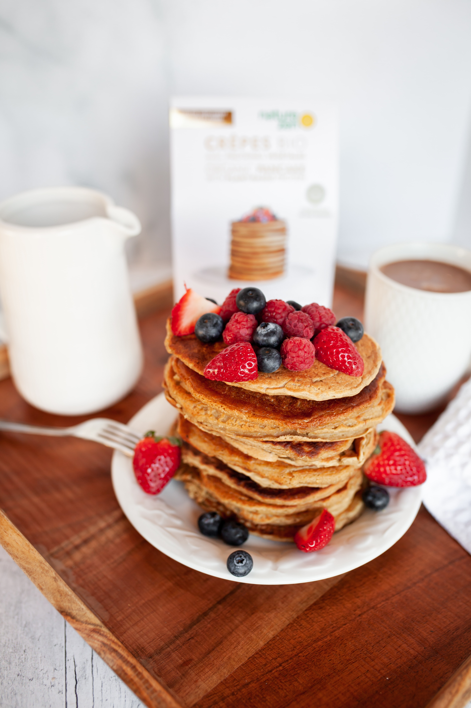

Protein Pancakes

Description
This recipe is for anyone that loves some sweetness in their life. It's an easy and quick way to
get some protein in your system alongside the benefit of eating something sweet.
Nutrients of this meal are: 437 kcal, 16g fat, 39g carbs, 31g protein.
Ingredients
- 1 banana
- 75g oats
- 3 large eggs
- 2 tbsp milk
- 1 tbsp baking powder
- pinch of cinnamon
- 2 tbsp of protein powder (whatever is your preference)
- some sort of oil for frying
- some sort toppings (maple syrup and fruits are recommended)
Preparation
- Put banana, oats, eggs, milk, baking powder, cinnamon and protein powder in blender
- Blend until oats have broken down
- Heat your pen and put 1-2 drops of oil (for each pancake)
- Cook for 1-2 minutes on each side
- Serve with your topping and enjoy!